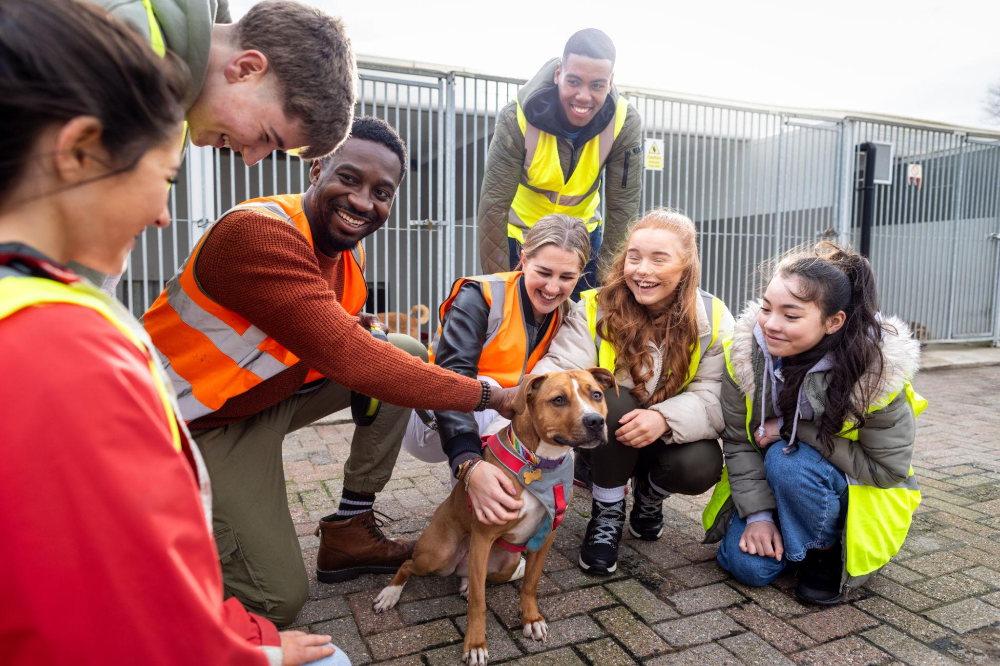

Our Story
Paws Haven Animal Rescue was founded by a group of local animal lovers who saw a growing number of stray and abandoned dogs in our community with nowhere to turn. What started as a handful of volunteers fostering dogs in their own homes has grown into a small shelter facility offering emergency intake, veterinary care, and rehabilitation for dogs in need.
Our Mission
To give every rescued dog a second chance at life through compassionate care, medical treatment, and responsible rehoming.
Our Vision
A community where no dog is left injured, abandoned, or without a home.
Our Team
Paws Haven is run by a small team of dedicated staff and volunteers, including our shelter manager, a part-time veterinary nurse, and a rotating group of community volunteers who help with feeding, walking, and socialising the dogs in our care.
